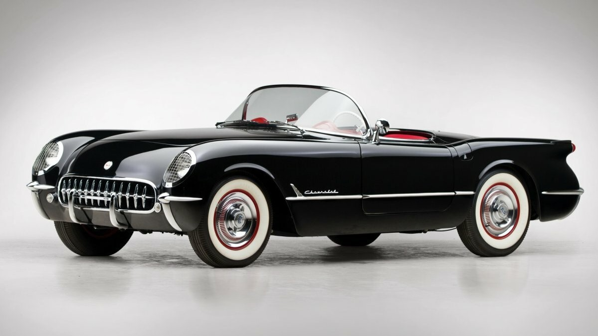
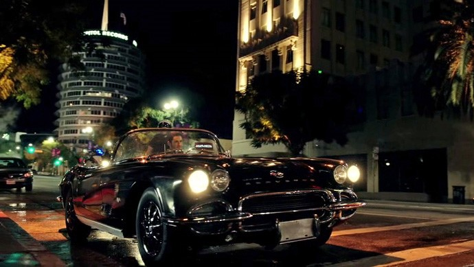
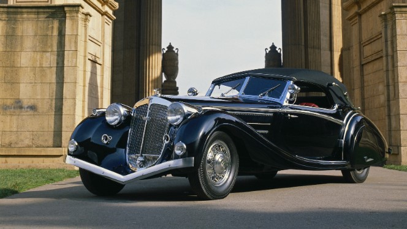
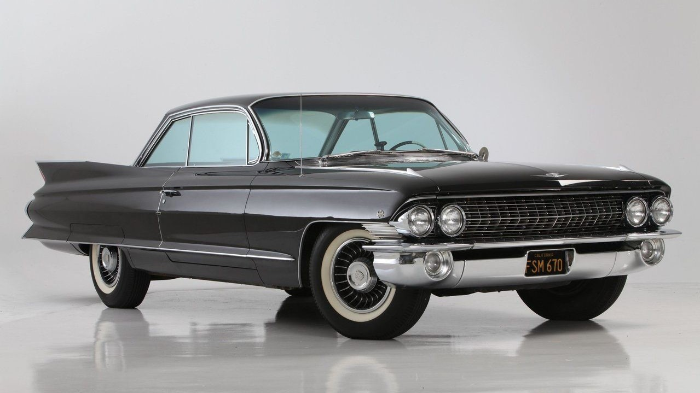
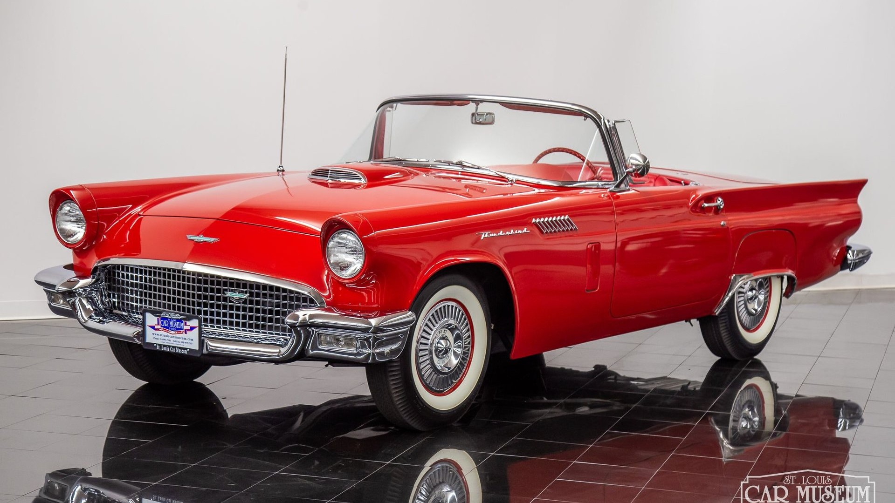
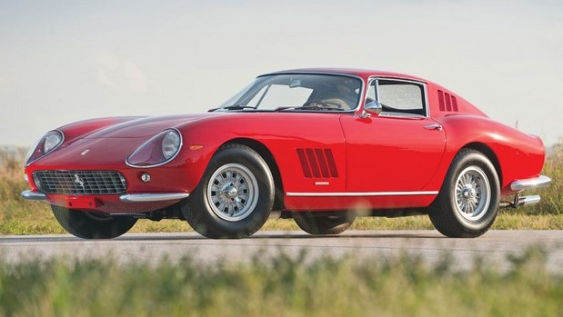

Характеристики
| Объём | 3,9 л | Тип двигателя | бензин |
| Мощность | 150 л.с. | Привод | задний |
| Коробка | механика | Разгон | 11 с |
Почему chevrolet corvette c1?
Я больше предпочитаю машины ретро. Они нравятся мне намного больше,чем современные. У них есть своя неповторимая атмосфера.
В 11 классе я начала смотреть сериал Люцифер и там я увидела её. Люцифер водит черный Chevrolet Corvette 1962 года с номерным знаком "FALL1N1" (Fallen One).

Характеристики
| Объём топливного бака | 60 л |
| Тип передней подвески | независимая, пружинная |
| Тип задней подвески | зависимая, рессорная |
| Передние тормоза | дисковые |
| Задние тормоза | дисковые |
Другие красивые ретро машинки
| Фото | Название |
|  | Horch Sport Cabriolet |
|  | Cadillac DeVille |
|  | Ford Thunderbird |
|  | Ferrari 275 GTB |